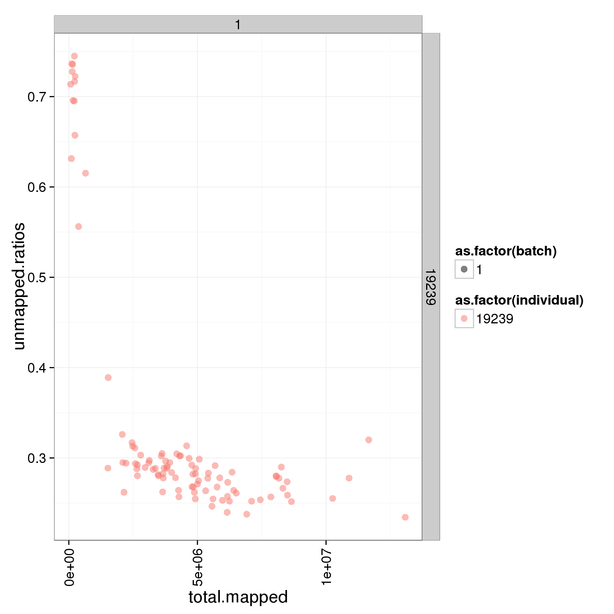
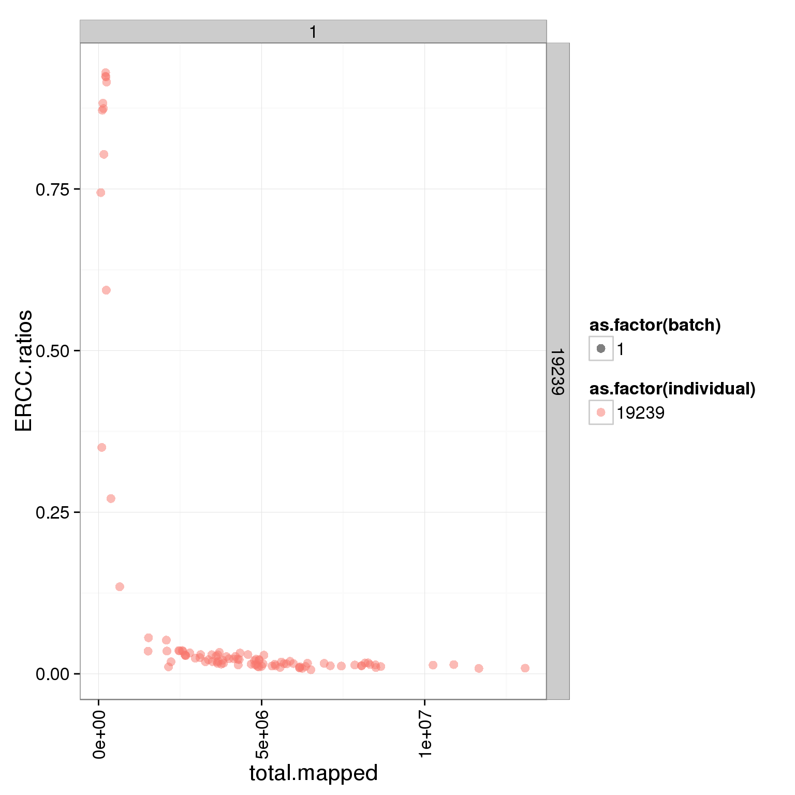
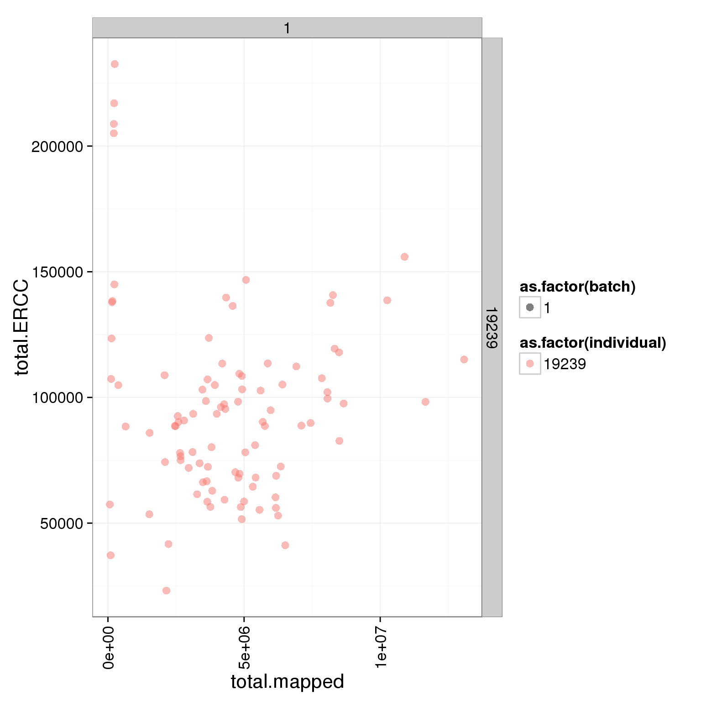

Quality control for LCLs
2015-07-10
Last updated: 2015-07-10
Code version: 68598743d3b85062d886537a63464fdddc374b72
Input
library("dplyr")
library("ggplot2")
theme_set(theme_bw(base_size = 16))
library("edgeR")counts <- read.table("/mnt/gluster/data/internal_supp/singleCellSeq/lcl/gene-counts-lcl.txt",
header = TRUE, sep = "\t", stringsAsFactors = FALSE)anno <- counts %>%
filter(rmdup == "molecules") %>%
select(individual:well) %>%
arrange(well)
anno <- mutate(anno, sample_id = paste(paste0("NA", individual),
batch, well, sep = "."))
anno <- mutate(anno, full_lane = well %in% c("A9E1", "B2E2", "B4H1", "D2H2"))
stopifnot(sum(anno$full_lane) == 4)
write.table(anno, "../data/annotation-lcl.txt", quote = FALSE, sep = "\t",
row.names = FALSE)
head(anno) individual batch well sample_id full_lane
1 19239 1 A01 NA19239.1.A01 FALSE
2 19239 1 A02 NA19239.1.A02 FALSE
3 19239 1 A03 NA19239.1.A03 FALSE
4 19239 1 A04 NA19239.1.A04 FALSE
5 19239 1 A05 NA19239.1.A05 FALSE
6 19239 1 A06 NA19239.1.A06 FALSEmolecules <- counts %>%
arrange(well) %>%
filter(rmdup == "molecules") %>%
select(-(individual:rmdup)) %>%
t
dim(molecules)[1] 20419 100colnames(molecules) <- anno$sample_id
# Fix ERCC names. A data table can have dashes in column names, but data frame
# converts to period. Since the iPSC data was read with fread from the
# data.table package in sum-counts-per-sample.Rmd, this was not a problem
# before.
rownames(molecules) <- sub("\\.", "-", rownames(molecules))
write.table(molecules, "../data/molecules-lcl.txt", quote = FALSE, sep = "\t",
col.names = NA)
molecules[1:10, 1:5] NA19239.1.A01 NA19239.1.A02 NA19239.1.A03 NA19239.1.A04
ENSG00000186092 0 0 0 0
ENSG00000237683 0 0 0 0
ENSG00000235249 0 0 0 0
ENSG00000185097 0 0 0 0
ENSG00000269831 0 0 0 0
ENSG00000269308 0 0 0 0
ENSG00000187634 0 0 0 0
ENSG00000268179 0 0 0 0
ENSG00000188976 0 0 0 0
ENSG00000187961 0 0 0 0
NA19239.1.A05
ENSG00000186092 0
ENSG00000237683 0
ENSG00000235249 0
ENSG00000185097 0
ENSG00000269831 0
ENSG00000269308 0
ENSG00000187634 0
ENSG00000268179 0
ENSG00000188976 0
ENSG00000187961 0reads <- counts %>%
arrange(well) %>%
filter(rmdup == "reads") %>%
select(-(individual:rmdup)) %>%
t
dim(reads)[1] 20419 100colnames(reads) <- anno$sample_id
rownames(reads) <- sub("\\.", "-", rownames(reads))
write.table(reads, "../data/reads-lcl.txt", quote = FALSE, sep = "\t",
col.names = NA)
reads[1:10, 1:5] NA19239.1.A01 NA19239.1.A02 NA19239.1.A03 NA19239.1.A04
ENSG00000186092 0 0 0 0
ENSG00000237683 0 0 0 0
ENSG00000235249 0 0 0 0
ENSG00000185097 0 0 0 0
ENSG00000269831 0 0 0 0
ENSG00000269308 0 0 0 0
ENSG00000187634 0 0 0 0
ENSG00000268179 0 0 0 0
ENSG00000188976 0 0 0 0
ENSG00000187961 0 0 0 0
NA19239.1.A05
ENSG00000186092 0
ENSG00000237683 0
ENSG00000235249 0
ENSG00000185097 0
ENSG00000269831 0
ENSG00000269308 0
ENSG00000187634 0
ENSG00000268179 0
ENSG00000188976 0
ENSG00000187961 0Summary counts from featureCounts. Created with gather-summary-counts.py. These data were collected from the summary files of the full combined samples.
summary_counts <- read.table("../data/summary-counts-lcl.txt", header = TRUE,
stringsAsFactors = FALSE)Currently this file only contains data from sickle-trimmed reads, so the code below simply ensures this and then removes the column.
summary_per_sample <- summary_counts %>%
filter(sickle == "quality-trimmed") %>%
select(-sickle) %>%
arrange(individual, batch, well, rmdup)
stopifnot(summary_per_sample$well[c(TRUE, FALSE)] == anno$well)Input single cell observational quality control data.
# File needs to be created
qc <- read.table("../data/qc-lcl.txt", header = TRUE,
stringsAsFactors = FALSE)
head(qc)Total mapped reads, unmapped ratios, and ERCC ratios
Looking at the unmapped ratio and ERCC ratio of each cell based on number of reads.
- low number of mapped reads might be caused by cell apoptosis, RNA degradation, insufficient cell lysis, bad Tn5 transposase quality, or contamination
- high proportion of ERCC spike-in indicates low RNA quantity from iPSCs which might cell death
# reads per sample
summary_per_sample_reads <- summary_per_sample %>% filter(rmdup == "reads")
# create unmapped ratios
summary_per_sample_reads$unmapped.ratios <- summary_per_sample_reads[,9]/apply(summary_per_sample_reads[,5:13],1,sum)
# create total mapped reads
summary_per_sample_reads$total.mapped <- apply(summary_per_sample_reads[,5:8],1,sum)
# plot
ggplot(summary_per_sample_reads, aes(x = total.mapped, y = unmapped.ratios, col = as.factor(individual), shape = as.factor(batch))) + geom_point(size = 3, alpha = 0.5)
# plot the sum of reads and 'Assigned'
plot(apply(reads,2,sum),summary_per_sample_reads[,5])
# total ERCC reads
summary_per_sample_reads$total.ERCC <- apply(reads[grep("ERCC", rownames(reads)), ],2,sum)
plot(summary_per_sample_reads$total.ERCC)
# creat ERCC ratios
summary_per_sample_reads$ERCC.ratios <- apply(reads[grep("ERCC", rownames(reads)), ],2,sum)/apply(summary_per_sample_reads[,5:8],1,sum)
# plot
ggplot(summary_per_sample_reads, aes(x = total.mapped, y = ERCC.ratios, col = as.factor(individual), shape = as.factor(batch))) + geom_point(size = 3, alpha = 0.5)
Looking at only the multiplexed single cell libraries (96 samples total, 24 each in lanes 1-4):
# remove bulk keep single cell
summary_per_sample_reads_single <- summary_per_sample_reads[!anno$full_lane, ]
# many plots
ggplot(summary_per_sample_reads_single, aes(x = total.mapped, y = unmapped.ratios, col = as.factor(individual), shape = as.factor(batch))) + geom_point(size = 3, alpha = 0.5) + xlab("Number of mapped reads") + ylab("Umapped reads ratio")
ggplot(summary_per_sample_reads_single, aes(x = total.mapped, y = ERCC.ratios, col = as.factor(individual), shape = as.factor(batch))) + geom_point(size = 3, alpha = 0.5) + xlab("Number of mapped reads") + ylab("Spike-in reads ratio")
ggplot(summary_per_sample_reads_single, aes(x = total.mapped, y = unmapped.ratios, col = as.factor(individual), shape = as.factor(batch))) + geom_point(size = 3, alpha = 0.5) + facet_grid(individual ~ batch) + theme(axis.text.x = element_text(angle = 90, hjust = 0.9, vjust = 0.5))
ggplot(summary_per_sample_reads_single, aes(x = total.mapped, y = ERCC.ratios, col = as.factor(individual), shape = as.factor(batch))) + geom_point(size = 3, alpha = 0.5) + facet_grid(individual ~ batch) + theme(axis.text.x = element_text(angle = 90, hjust = 0.9, vjust = 0.5))
ggplot(summary_per_sample_reads_single, aes(x = total.mapped, y = total.ERCC, col = as.factor(individual), shape = as.factor(batch))) + geom_point(size = 3, alpha = 0.5) + facet_grid(individual ~ batch) + theme(axis.text.x = element_text(angle = 90, hjust = 0.9, vjust = 0.5))
Session information
sessionInfo()R version 3.2.0 (2015-04-16)
Platform: x86_64-unknown-linux-gnu (64-bit)
locale:
[1] LC_CTYPE=en_US.UTF-8 LC_NUMERIC=C
[3] LC_TIME=en_US.UTF-8 LC_COLLATE=en_US.UTF-8
[5] LC_MONETARY=en_US.UTF-8 LC_MESSAGES=en_US.UTF-8
[7] LC_PAPER=en_US.UTF-8 LC_NAME=C
[9] LC_ADDRESS=C LC_TELEPHONE=C
[11] LC_MEASUREMENT=en_US.UTF-8 LC_IDENTIFICATION=C
attached base packages:
[1] stats graphics grDevices utils datasets methods base
other attached packages:
[1] edgeR_3.10.2 limma_3.24.9 ggplot2_1.0.1 dplyr_0.4.1 knitr_1.10.5
loaded via a namespace (and not attached):
[1] Rcpp_0.11.6 magrittr_1.5 MASS_7.3-40 munsell_0.4.2
[5] colorspace_1.2-6 stringr_1.0.0 plyr_1.8.2 tools_3.2.0
[9] parallel_3.2.0 grid_3.2.0 gtable_0.1.2 DBI_0.3.1
[13] htmltools_0.2.6 lazyeval_0.1.10 yaml_2.1.13 assertthat_0.1
[17] digest_0.6.8 reshape2_1.4.1 formatR_1.2 evaluate_0.7
[21] rmarkdown_0.6.1 labeling_0.3 stringi_0.4-1 scales_0.2.4
[25] proto_0.3-10